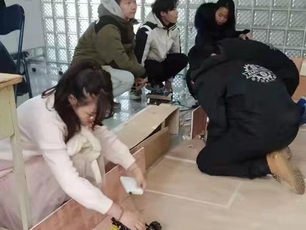
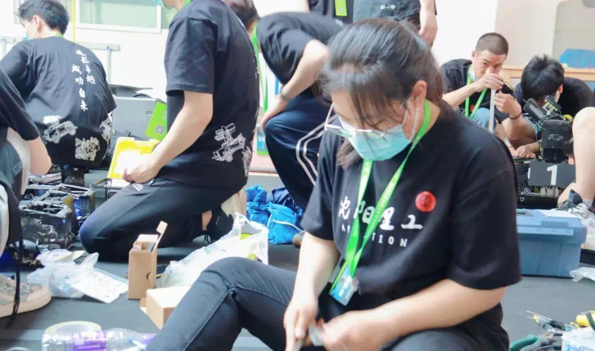
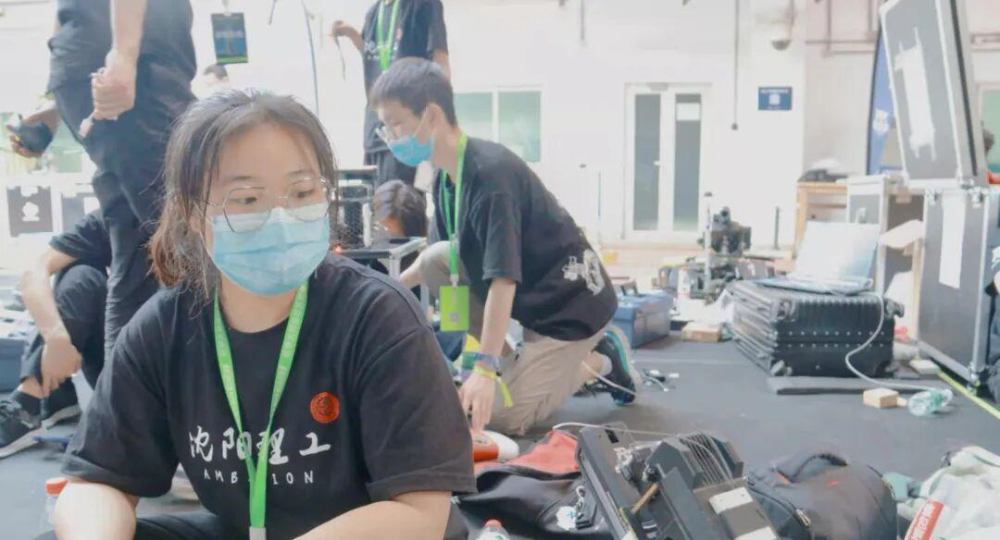
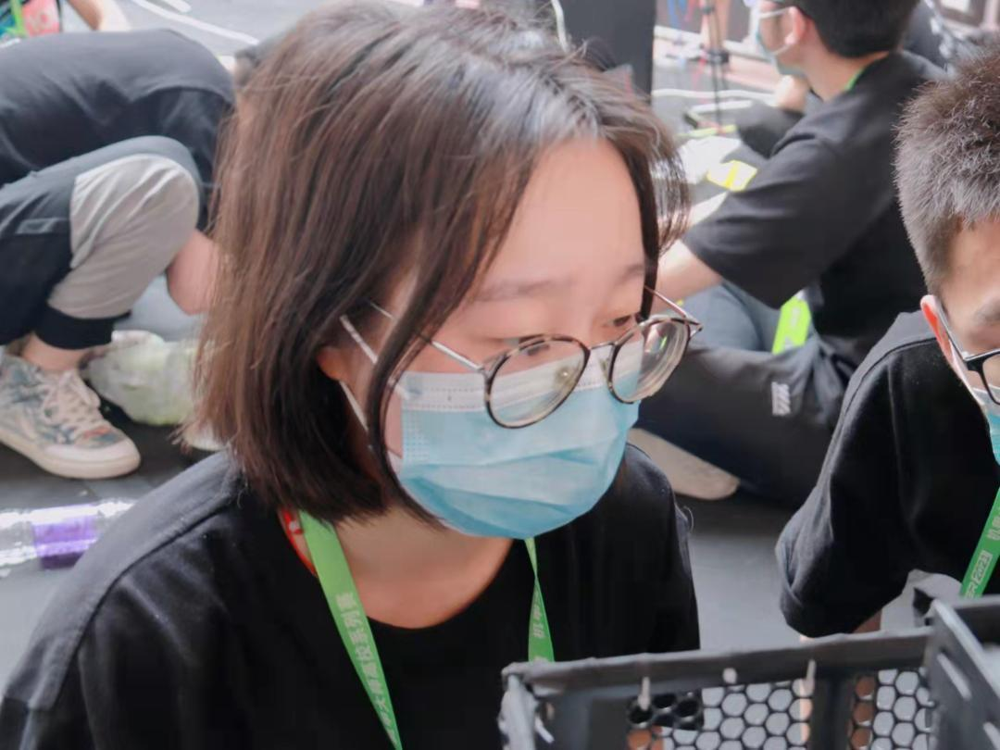
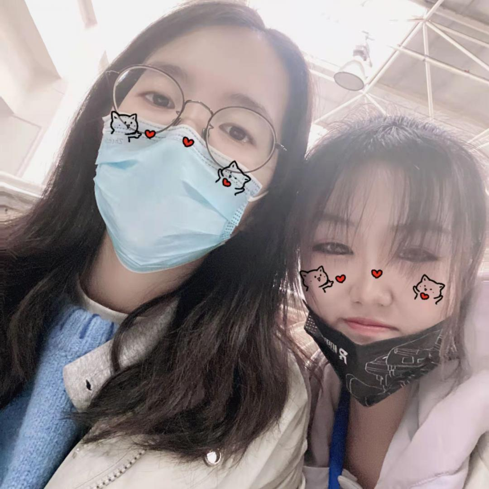
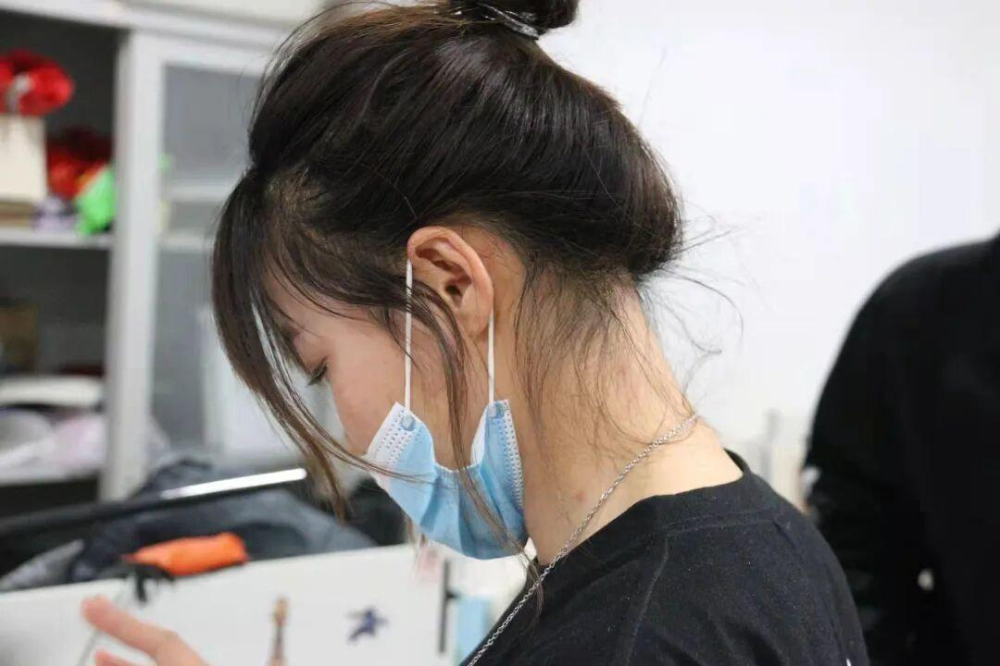

Girl's power——女生专访
三月八日是妇女节！
首先祝所有女性节日快乐！
要不被定义
要永远美丽
要永远年轻自信
要永远年轻快意！
# 揭秘，电协女生专访#
作为电协中极其重要的一部分，RM女生的作用毋庸置疑，她们不辞辛劳，她们勇担重任，她们是电协不可忽视的力量。本期让我们采访一下电协女生们，揭秘她们与电协的故事吧！







小编: 做个简短的自我介绍吧。
舒铭: 大家好，我是不愿意透露的视觉小垃圾gls ，知名摸鱼大师， 树獭的传人-舒铭。
小编：进入战队的最大收获是什么？
舒铭：学到了很多技术，然后认识了很多有共同兴趣的人，不那么社恐了。（老社恐人狂喜）
小编：对于“女生不适合理工科”这种偏见是怎么想的？
舒铭：是否适合理工科是看个人的能力和偏好，而不是轻易归咎于性别。
小编：由于战队工作的缘故，队员或多或少都有熬夜赶进度的时候，这些对你有什么影响吗？
舒铭: 没啥影响，会有点累，但是干就完了，从此宿舍是路人（依稀记得上学期我室友对我说，我好像一个星期都没在宿舍看见你了）
小编：留一句祝福的话吧！
舒铭：祝所有女性天天开心，吃好睡好自己最重要！
小编: 做个简短的自我介绍吧。
潘晶：步兵组组长。
小编：进入战队的最大收获是什么？
潘晶：在战队遇到了很多厉害的大神，也学到了关于机械的一些知识，并实践出来。
小编：由于战队工作的缘故，队员或多或少都有熬夜赶进度的时候，这些对你有什么影响吗？
潘晶：在忙比赛的时候，由于进度还有维修上的问题，常常需要熬夜，我觉得还好，把车做出来的那一刻，满足感要大于熬夜带来疲惫感。
小编：留一句祝福的话吧！
潘晶：祝妇女节快乐！


小编: 做个简短的自我介绍吧。
慧姐: 大家好，我是20级战队硬件组孙慧，硬件组美女，战队开心果，当之无愧的团宠，战队中才华出众的淑女（最终解释权归慧姐所有，不接受反驳）。
小编：由于战队工作的缘故，队员或多或少都有熬夜赶进度的时候，这些对你有什么影响吗？
慧姐: 大家熬夜赶工，都是为了一个共同目标，为了能让自己做的东西飞驰在赛场上，为了共同的荣誉，不辜负老师学长的期待.......同时能增加感情，战队的凝聚力，感觉大家都好努力，确实很感动，内心默默的说我也要努力！
小编：留一句祝福的话吧！
慧姐: 希望RM女生，个个都是女王，女王节快乐！

小编：做个简短的自我介绍吧。
大苗：大家好，我是咸鱼精英，世界级拖延艺术家，运营小菜鸟-一只大苗。
小编：由于战队工作的缘故，队员或多或少都有熬夜赶进度的时候，这些对你有什么影响吗？
大苗：俗话说，一切通往灵感的秘密都来源于夜晚，我爱熬夜工作。
小编：进入战队的最大收获是什么？
大苗：变得不那么拖延了，对我影响最大的是可以自己独立完成一份工作了。
小编：留一句祝福的话吧！
大苗：祝所有女性永远美丽，充满自信！
或许RM人女性占比很少，但随着你的慢慢深入了解，就会感受到一股不可忽略的女性力量，让我们看到了更多女性在比赛中的蕴藏着无限力量。最后希望每个女孩子越来越好，永远年轻，永远自信，为了热爱而努力前行！

排版：木子
文字：一只大苗